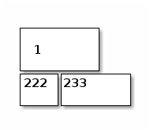
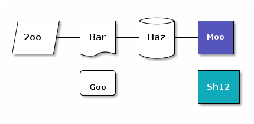
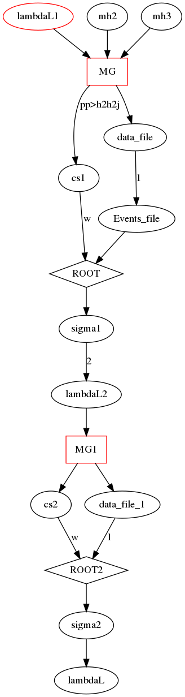

Emacs
Table of Contents
customize
helps
C-h v comands customize the settings C-M-\ zusammen runs the command indent-region (ESC C-\ getrennt) C-h c runs the command describe-key-briefly C-j runs the command org-return-and-maybe-indent C-q runs the command quoted-insert C-d runs the command org-delete-char M-DEL (translated from <M-backspace>) runs the command backward-kill-word M eqaul to C-u
bookmark
| C-x r m | bookmarks set |
|---|---|
| C-x r b | bookmark jump |
configuration with packages
how to extension the packages from someone already wrote
M-x load file ~/.emacs.d/packages/echo-keys.el M-x echo-keys-mode (global-set-key "\C-o" 'compile) (global-set-key "\C-\M-r" 'ranger)
file control dired & treemacs
mode dired
| enter or a or f | enter the file |
| c or C-o | other buffer view |
| + | creat a directory |
| m | mark |
| C | copy to |
| R | rename or move |
| D | delete |
mode treemacs
this can be another helpful control tool, ? for help
| C-M-r | treemacs | open folder |
| ? | help | |
| M-o | to treemacs | from file to treemacs |
Virtual environment
在terminal 打开虚拟环境后，在打开 Emacs Emacs 会继承这些环境变量
shortcut Emacsclient
emacsclient -a "" -c
hotkey setting
M-x: global-set-key Press the wanted keybindings input the mapped command
(global-set-key "\C-o" 'compile)
chinese fonts
| M-x install cnfonts | 安装 |
| (require 'cnfonts) | enable config |
| M-x cnfonts-edit-profile | config |
| (cnfonts-enable) | load from start |
| M-x cnfonts-set-font-with-saved-step | 手动加载 |
| M-x cnfonts-decrease-fontsize | 增大整个系统的字体大小 |
| M-x cnfonts-increase-fontsize | 减小 |
daemon process
alias emc="emacsclient -c "
emacs --daemon emc xxx.org
error
if by configuration failed, emacs –debug-init find the postion M-x: goto-char postion
EMACS Commands
| commands | functions | explain |
|---|---|---|
| C-c C-p | call the functions | execute buffer for language (python) |
| C-c C-c | execute programm or function | watch out the execute envirment |
| C-c C-o | open website link | links or website both |
| C-c C-w | save as | 另存为 |
| C-u C-x C-e | execute expression force | the results show where the cursor it |
| C-M-x | open shell | M-x term |
| C-M-SPC | mark the word | the whole worlds |
| M-x | customize-option Word-wrap | ON, 关掉换行 |
Timer
| commands | functions | expression |
|---|---|---|
| C-c C-x 0 | start the timer | from 00:00:00 |
| C-c C-x - | print the time | how long has been start |
| C-c C-x , | pause or continue | one pause, one continue |
| C-u C-c C-x , | stop | clear all |
Extension
Yasnippes
first make sure wich mode you are, so the new setting can only be used in the same mode, and the mode must be save in this mode
M-x yas-new-snippes
mu4e
| mu4e | open mail client |
| A e 1 & 1 | view attachments |
| C-c C-a | add attachment |
| g 2 | go to the second link |
eww
q :for quit w(eww-copy-page-url) :copy the URL
d (eww-download) g (eww-reload) l(eww-back-url) :previous seit r(eww-forward-url) :forward seit
b(eww-add-bookmark) : add current seit as bookmark B(eww-list-bookmarks) : view bookmark
S(eww-list-buffers) s(eww-switch-to-buffer)
& (eww-browse-with-external-browser) eww-use-external-browser-for-content-type v (eww-view-source)
C (url-cookie-list)
helpful mode for edit
M-x linum mode M-x check parens M-x show-parent-mode (Error :end file of parsing) can be caused by lack of parentheses
Rectangle
| add content for all select lines | string-insert-rectangle |
| add content for all select lines | string-rectangle |
| cut content for all select mark region | C-x SPE C-w |
| post content for all select mark region | C-x SPE C-y |
Org mode
commods
| org mode manual in emccs | M-x org-info |
| C-x C-q | enable readonly |
| C-; | 可以检查当前单词的拼写 |
| sudo apt install grip, M-x grip mode | live compile for markdown |
| C-c C-z | add note to items, quick note |
| C-c C-c | switch between them |
checklist
可以在item后面加上[0/2] or [0%]
[ ]S-A-Ent for a new checklist[ ]C-c C-c to finish this checklist
link
| commands | function | explain |
|---|---|---|
| C-c C-o | goto the link | must in the link description |
| C-c C-l | edit the link | also in the link |
| C-c C-. | go back |
external file
[[.../file.org::345]] go to the file of line 345 [[.../file.org::target]] to to the file with target, 3 kinds of internal [[file:~/code/main.c::255 ]] 进入到 255 行 [[file:~/xx.org::My Target ]] 找到目标‘<<My Target>>’ [[file:~/xx.org::#my-custom-id]] 查找自定义 id 的项
org-msg
- mbsync setting seeing in Dropbox - C-c C-m to send email - math :file output.png -> C-c C-c - digraph -> - graph --
org-noter
M-x: package install : org-noter - open xxx.pdf as emacs - M-x: org-noter -> create a file as assige its position(a image without type name will be created) - i for generic notes, M-i for special note with mouse to click - give name and make notes - C-M- (. p n) check notes for current, previous, and after notes with a rot arrow to the file
org-reveal reveal.js & ox-reveal
need to download reveal-js(unzip, and path pass to org-reveal-root) reveal.js download need to download org-reveal(were replace by ox-reveal) org reveal ox reveal
#+OPTIONS: num:nil toc:nil #+REVEAL_TRANS: None/Fade/Slide/Convex/Concave/Zoom #+REVEAL_THEME: Black/White/League/Sky/Beige/Simple/Serif/Blood/Night/Moon/Solarized #+Title: Title of Your Talk #+Author: Your Name #+Email: Your Email Address or Twitter Handle
org-html-themes
add this at the top #+SETUPFILE: https://fniessen.github.io/org-html-themes/setup/theme-readtheorg.setup
或者下载后用本地的模板
# -*- mode: org; -*- #+HTML_HEAD: <link rel="stylesheet" type="text/css" href="/home/sx/Dropbox/Sprache/Emacs/orgmode/org-html-themes/styles/readtheorg/css/htmlize.css"/> #+HTML_HEAD: <link rel="stylesheet" type="text/css" href="/home/sx/Dropbox/Sprache/Emacs/orgmode/org-html-themes/styles/readtheorg/css/readtheorg.css"/> #+HTML_HEAD: <script src="https://ajax.googleapis.com/ajax/libs/jquery/2.1.3/jquery.min.js"></script> #+HTML_HEAD: <script src="https://maxcdn.bootstrapcdn.com/bootstrap/3.3.4/js/bootstrap.min.js"></script> #+HTML_HEAD: <script type="text/javascript" src="/home/sx/Dropbox/Sprache/Emacs/orgmode/org-html-themes/styles/lib/js/jquery.stickytableheaders.min.js"></script> #+HTML_HEAD: <script type="text/javascript" src="/home/sx/Dropbox/Sprache/Emacs/orgmode/org-html-themes/styles/readtheorg/js/readtheorg.js"></script>
org-mind-map
github link is here,
M-x org-mind-map-write to execute
add legend, text display, image display
:OMM-COLOR: GREEN :org-mind-map-include-text t :org-mind-map-include-image t :OMM-LEGEND: Legend entry
org-roam
org-roam-mode org-roam-db-build-cache org-roam-find-index org-roam-find-file org-roam-insert
org-journal
lsp-java
| lsp-java-generate-getters-and-setters | 需要安装helm | 在所有的可选中 C-SPE 选中 |
|---|---|---|
helm
for C-x C-f :find files C-l go back to the above directory
(helm-mode 1) (require 'helm-config) (global-set-key (kbd "M-x") 'helm-M-x) (global-set-key (kbd "M-y") 'helm-show-kill-ring) (global-set-key (kbd "C-x C-f") 'helm-find-files)
helm-org-rifle
在已经打开的所有文件中匹配搜索关键词，是所有打开文件 keywords searching in all opened files, external files,
SRC block
commands
| <s Tab | old version (require 'org-tempo) new version executable |
| C-c C-, | new version |
| C-c C-x C-v | view png of latex in SRC |
| C-c C-x C-l | view image of latex in pure orgmode |
| C-c ' | edit all src in a new buffer with mode |
options
src 前缀
| #+name: blockname | blockname 可以被:noweb yes的代码块调用 |
| #+call :blockname(x = 3) | |
| #+PROPERTY: tangle xxx.tex | 全文所有相关码块导出到xxx.tex文件 |
| #+PROPERTY: comments org | 全文org格式内容（不在src块中）导出时被注释 |
src 后缀
| language | function |
| C/python/emacs-lisp | |
| :file abc.org | |
| :dir | 指定生成代码的路径 |
| :results output | |
| :export (到html文件) | code 只导出代码，results 只是结果 ，both |
| :session my | 可切换到生成的my buffer 操作 |
| :tangle (创建源码） | 文件名，yes, no |
| :noweb yes | 对tangle和export作用 |
| :tangle xxx.py | 输出文件 |
| :var x=2 | |
| :shebang | 指定码块的解释器 |
noweb:可以使用任何设定了名字的代码块，每次都是重新执行一遍所有相关代码。 session:后台会启动一个相应的解释器控制台，所有名称相同的代码块都会被加 载到该控制台，一直运行，并可以交互。
ditaa
sudo apt-get install ditaa C-c C-x C-v to view


graphviz
sudo apt install graphviz

math
equation
Matrix
$$
\begin{equation} s_{kk'}= \left( \begin{array}{ccc} h_{1k} & \cdots & h_{nk} \end{array} \right) \left( \begin{array}{ccc} \bar{q}_{11} & \cdots & \bar{q}_{12}\\ \vdots & \ddots & \vdots\\ \bar{q}_{n1} & \cdots & \bar{q}_{n2} \end{array} \right) \left( \begin{array}{c} h_{1k'} \\ \vdots \\ h_{nk'} \end{array} \right) \end{equation}$$
parentheses
set \[ X = \left( \begin{aligned} aa \\ bb\\cc \end{aligned} \right) \]
Tabelle
Special characters
latex-math-preview-insert-mathematical-symbol this is to add special characters for latex
Formation
添加大括号
\begin{cases}
\end{cases}
增加分行
\begin{aligned}
\end{aligned}
在orgmode中，Esc下面的~键可以调出希腊字母输入 C-z也可以调出特殊字符输入
$\mathcal{L}$
$\mathcal{B}$
\(\mathcal{L}\) \(\mathcal{B}\)
Compile Python2
1. in Orgmode using SRC to save a python2 programm, with its interpreter 2. C-c ' opening the buffer 3. C-c C-p open the python interpreter, weather it is wanted 4. mark the region in programm buffer 5. C-c C-r import the marked region to the interpreter
Agenda & capture & todo
| comands | explain | function |
|---|---|---|
| C-c c | add new capture | capture |
| C-c C-s 1 | add new scheduling to items | agenda |
| C-c C-t 2 | add new TODO to items | todo |
| C-c C-d | add new deadline to items | agenda |
| C-c a | check agenda function | agenda |
| C-c a a | check all agenda items | f, b |
| S-f | from capture list to file | agenda |
| C-' 3 | switch in all agenda file | agenda |
| C-c C-x C-c | view todo, pri and tags of items | summary |
| C-c C-c(q) | add tags in items | must in items |
ispell-region
mark all the region I want to check, and M-X ispell-region space for nothing and numbers for replace.
notebook-jupyter
conda activate tf emacs xxx.ipynb C-c C-o
official link document emacs ipython notebook github link
Install
M-x package-refresh-contents RET M-x package-install RET ein RET
emacs xxx.ipynb C-c C-l/o
commands
| C-c C-a | ein:worksheet-insert-cell-above-km | 向上插入cell |
| C-c C-b | ein:worksheet-insert-cell-below-km | 向下插入cell |
| C-c C-c | ein:worksheet-execute-cell-km | 执行cell |
| C-c C-k | ein:worksheet-kill-cell-km | kill cell |
| C-c C-s | ein:worksheet-split-cell-at-point-km | 划分cell |
| C-c C-w | ein:worksheet-copy-cell-km | 复制cell |
| C-c C-l | ein:worksheet-clear-output-km | 清除结果 |
| C-c C-u | ein:worksheet-change-cell-type-km | 更换属性cell |
| C-c C-z | ein:notebook-kernel-interrupt-command-km | 中断cell |
| C-c C-y | ein:worksheet-yank-cell-km | yank cell |
| C-c RET | ein:worksheet-merge-cell-km | 向上融合cell |
| C-c C-f | ein:file-open-km | 打开文件 |
| M-Ent | ein:worksheet-execute-cell-and-goto-next-km | execute, goto next |
<C-down> ein:worksheet-goto-next-input-km <C-up> ein:worksheet-goto-prev-input-km
| C-u C-c C-c | ein:worksheet-execute-all-cells |
| C-c C-e | ein:worksheet-toggle-output-km |
| C-c C-n | ein:worksheet-goto-next-input-km |
| C-c C-o | ein:notebook-open-km |
| C-c C-p | ein:worksheet-goto-prev-input-km |
| C-c C-q | ein:notebook-kill-kernel-then-close-command-km |
| C-c C-r | ein:notebook-reconnect-session-command-km |
| C-c C-t | ein:worksheet-toggle-cell-type-km |
| C-c C-v | ein:worksheet-set-output-visibility-all-km |
| C-c C-x | Prefix Command |
notebook-jupyter
conda activate tf emacs xxx.ipynb C-c C-o
official link document emacs ipython notebook github link
Install
M-x package-refresh-contents RET M-x package-install RET ein RET
emacs xxx.ipynb C-c C-l/o
commands
| C-c C-a | ein:worksheet-insert-cell-above-km | 向上插入cell |
|---|---|---|
| C-c C-b | ein:worksheet-insert-cell-below-km | 向下插入cell |
| C-c C-c | ein:worksheet-execute-cell-km | 执行cell |
| C-c C-k | ein:worksheet-kill-cell-km | kill cell |
| C-c C-s | ein:worksheet-split-cell-at-point-km | 划分cell |
| C-c C-w | ein:worksheet-copy-cell-km | 复制cell |
| C-c C-l | ein:worksheet-clear-output-km | 清除结果 |
| C-c C-u | ein:worksheet-change-cell-type-km | 更换属性cell |
| C-c C-z | ein:notebook-kernel-interrupt-command-km | 中断cell |
| C-c C-y | ein:worksheet-yank-cell-km | yank cell |
| C-c RET | ein:worksheet-merge-cell-km | 向上融合cell |
| C-c C-f | ein:file-open-km | 打开文件 |
| M-Ent | ein:worksheet-execute-cell-and-goto-next-km | execute, goto next |
| <C-down> | ein:worksheet-goto-next-input-km | |
| <C-up> | ein:worksheet-goto-prev-input-km | |
| C-c down | pull cell down | |
| C-c up | pull cell up |
| C-u C-c C-c | ein:worksheet-execute-all-cells |
| C-c C-e | ein:worksheet-toggle-output-km |
| C-c C-n | ein:worksheet-goto-next-input-km |
| C-c C-o | ein:notebook-open-km |
| C-c C-p | ein:worksheet-goto-prev-input-km |
| C-c C-q | ein:notebook-kill-kernel-then-close-command-km |
| C-c C-r | ein:notebook-reconnect-session-command-km |
| C-c C-t | ein:worksheet-toggle-cell-type-km |
| C-c C-v | ein:worksheet-set-output-visibility-all-km |
| C-c C-x | Prefix Command |